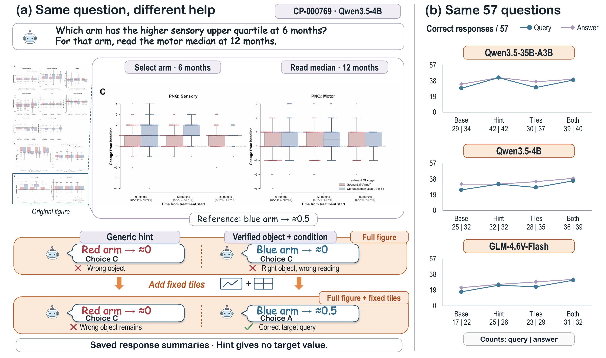

CrossPanelExposing the Answer–Evidence Gap
in Scientific Figure Understanding
* Equal contribution · arXiv, November 2026
The benchmark
CrossPanel contains 2,650 human-reviewed questions across eight disciplines. Some ask a model to combine independent observations. Others require it to select an object in one panel and follow that object into another.
For 251 questions, we also assess the explanation. Does it identify the right object and conditions, link them across panels, and read the evidence at the stated location?
The answer–evidence gap
Across 15 models, 8.42%–56.64% of correct answers on the diagnostic questions contain an explicit factual error. Requiring evidence can change the ranking: DeepSeek V4.1 Flash leads GPT-5.4 mini on answer accuracy, but GPT-5.4 mini leads on joint correctness.

View scores for all 15 models
| Model | Overall | Answer | Joint | Error given correct ↓ |
|---|---|---|---|---|
| Gemini 3.5 Flash-Lite | 73.40 | 75.70 | 66.14 | 8.42 |
| GPT-5.4 mini | 67.62 | 71.31 | 62.55 | 10.61 |
| Grok 4.3 (reasoning disabled) | 55.13 | 61.35 | 49.00 | 17.53 |
| GPT-4o (2024-11-20) | 44.98 | 52.99 | 37.45 | 24.81 |
| Qwen3.5-35B-A3B | 68.38 | 68.92 | 56.97 | 17.34 |
| DeepSeek V4.1 Flash (1017) | 63.85 | 72.11 | 57.37 | 18.78 |
| Qwen3.5-4B | 55.06 | 60.56 | 48.21 | 19.74 |
| Qwen2.5-VL-72B-Instruct | 48.00 | 53.78 | 35.86 | 20.74 |
| Ministral-3-14B | 44.94 | 52.59 | 36.65 | 27.27 |
| Qwen3-VL-30B-A3B | 44.08 | 53.39 | 34.66 | 34.33 |
| GLM-4.6V-Flash | 43.62 | 49.00 | 32.67 | 30.89 |
| InternVL3.5-38B | 42.64 | 49.80 | 29.08 | 32.80 |
| InternVL3.5-8B | 39.51 | 44.22 | 19.52 | 44.14 |
| Gemma-3-27B-IT | 39.47 | 46.22 | 19.12 | 48.28 |
| Molmo2-8B | 34.53 | 45.02 | 14.34 | 56.64 |
What helps a model read the right target?
On 57 questions, giving Qwen3.5-35B-A3B the verified object and condition raised correct target readouts from 29 to 42. The hint withheld the requested measurement. Adding image tiles alone raised the count to 30.

Citation
@misc{lu2026crosspanel,
title = {{CrossPanel}: Exposing the Answer--Evidence Gap in Scientific Figure Understanding},
author = {Zhengyang Lu and {QianhongWen} and Chenpeng Wang and Qiang Huang and Ziyang Ling and Huan Li and {Chenziao} and Yibo Qiu and Xiaojie Cheng},
year = {2026},
eprint = {2611.28641},
archivePrefix = {arXiv},
primaryClass = {cs.CV},
url = {https://arxiv.org/abs/2611.28641}
}